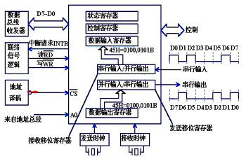
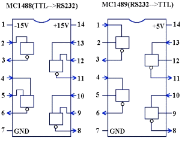
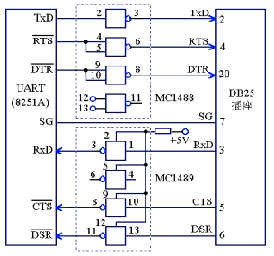
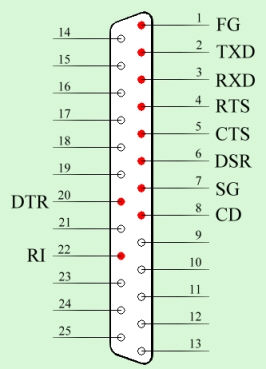

串口通讯接口电路
通用异步收发器

能够完成上述“串<- ->并”转换功能的电路，通常称为“通用异步收发器”
（UART：Universal Asynchronous Receiver and Transmitter）,
典型的芯片有：Intel 8250/8251,16550。
电气特性
EIA-RS-232C对电器特性、逻辑电平和各种信号线功能都作了规定。
在TxD和RxD上：逻辑1(MARK) =－3V～－15V
逻辑0(SPACE)=+3V～+15V
在RTS、CTS、DSR、DTR和DCD等控制线上：
信号有效（接通，ON状态，正电压）＝+3V～+15V
信号无效（断开，OFF状态，负电压) = -3V～-15V
TTL<-->RS232转换芯片


连接器的机械特性
